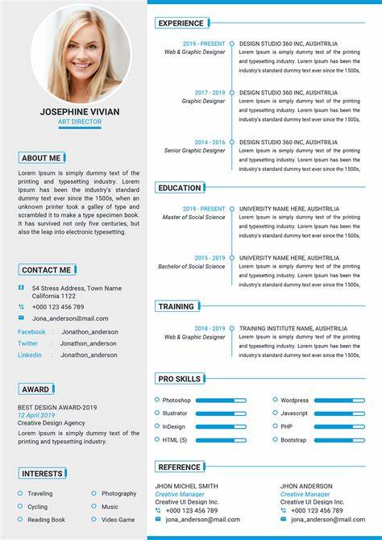

Interactive Resume Builder
In the current digital era, having a polished resume is crucial for job seekers. To address this need, I developed an Interactive Resume Builder, a web-based tool designed to simplify and personalize the resume creation process. The platform is not just a static template but a comprehensive career tool that offers guidance and flexibility for creating a professional and eye-catching resume. Here's a deep dive into the Interactive Resume Builder's journey from concept to execution:
- Conceptualization: The project began with identifying the gap in the market for an easy-to-use, versatile resume creator. Through market research and user interviews, the vision for a dynamic tool that could cater to diverse job markets and industries was formulated.
- Technology Stack: Built using the robust MERN stack (MongoDB, Express.js, React, Node.js), the application boasts a seamless user experience with a responsive frontend, a scalable server, and a non-relational database for user data management.
- User-Centered Design: User experience was at the forefront of the Interactive Resume Builder's design philosophy. Features such as a drag-and-drop interface, real-time editing, and contextual tips provide an intuitive experience even for those less tech-savvy.
- Template Diversity: Understanding the uniqueness of each career path, a variety of templates were developed, ranging from the creative arts to the technical fields, ensuring that every user finds a fitting starting point.
- Feature-Rich Editing Tools: Users can customize every aspect of their resume, with options to change fonts, layouts, and colors, as well as the ability to add custom sections and import data from LinkedIn.
- Collaboration and Feedback: A standout feature allows users to share their resume drafts with mentors or peers for feedback, fostering a collaborative approach to resume development.
- Challenges Overcome: The project was not without its challenges; implementing a robust PDF export feature required diving deep into PDF generation libraries and optimizing the output for various platforms.
- Security Measures: Protecting user data was paramount. Implementing OAuth for authentication and ensuring data encryption both in transit and at rest were critical steps in fortifying the application's security.
- Continuous Integration/Continuous Deployment (CI/CD): To streamline updates and maintain high availability, a CI/CD pipeline was established, allowing for automated testing and deployment to the cloud hosting platform.
- Market Impact: Since its launch, the Interactive Resume Builder has aided thousands in crafting resumes that stand out, with an overwhelmingly positive reception reflected in user testimonials and a significant reduction in the time taken to create a resume.
- Future Directions: Looking ahead, plans are in place to integrate AI-based content suggestions, further template customization, and a mobile application to provide on-the-go resume editing capabilities.